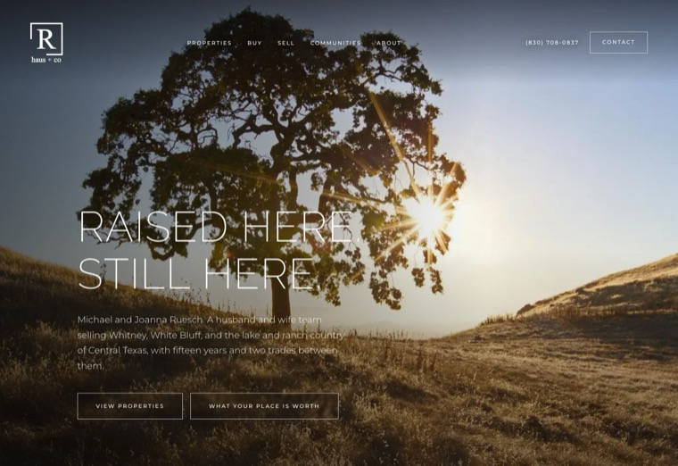
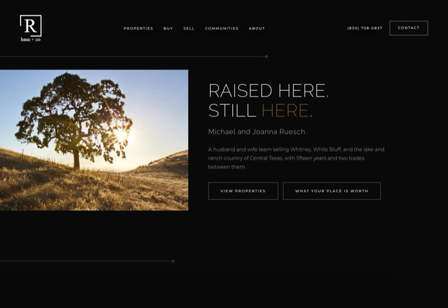
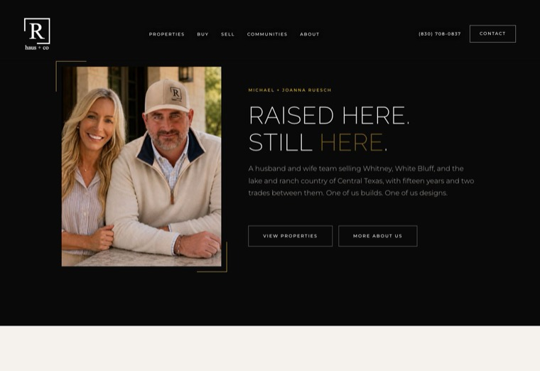
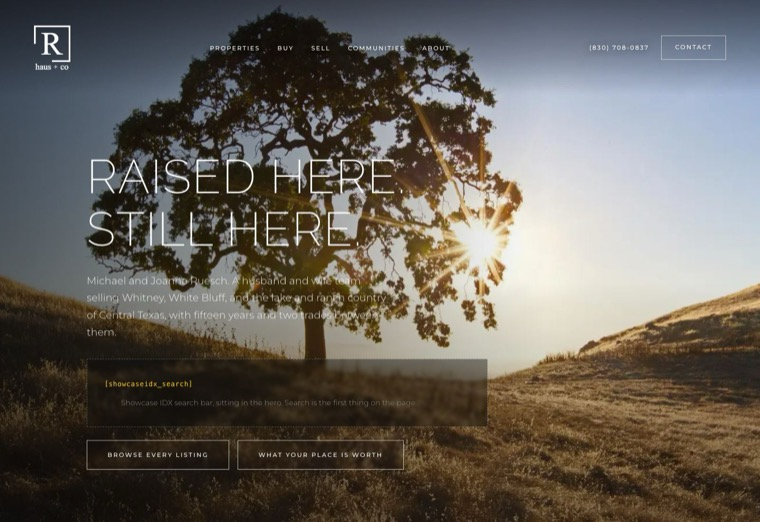
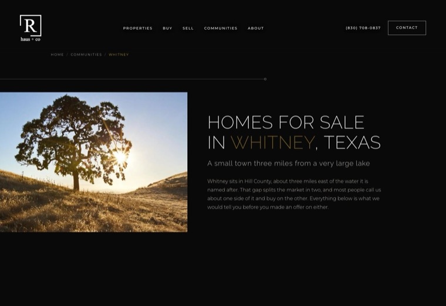
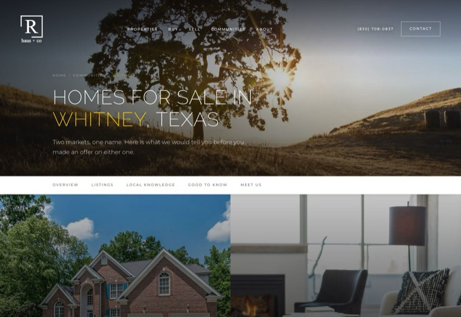
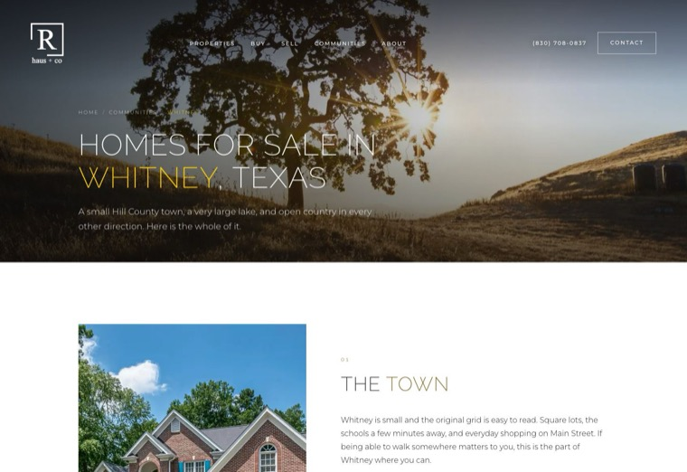
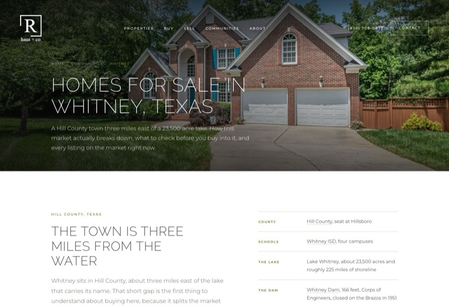
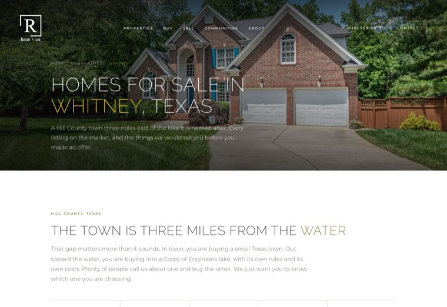

Four takes on the home page and six on the Whitney community page. Every version carries the same facts and the same Showcase IDX zones. What changes is the strategy and the layout, never the content. Click any card to open it, or the 375 tag to see it at phone width.

The approved build, ten rounds in. Landscape hero, the paired practice at position two, full-bleed communities.

Near-black throughout, drawn from the Delano reference. Connector rules, photograph bleeding off the left edge, the checkerboard all on ink.

Credibility first. Opens on Michael and Joanna rather than a landscape, because the husband and wife two-trade story is the actual differentiator.

Utility first. A search bar sits in the hero and listings come immediately after. Everything else supports the search.

The Delano register applied to the community page. All ink, connector rules, a bordered chip grid for the saved searches and towns, checkerboard markets.

Town on one side, water on the other, in one edge to edge panel. A sticky rail under the hero navigates without hiding anything.

The photograph holds still while the text scrolls past it, swapping at each of five chapters. The last plate resolves to Michael and Joanna.

Everything stacked, nothing hidden. The first pass, kept for reference. Its copy is the earlier, cooler register.
The shortest page, but only because content sits behind tabs. Accordion on phones. Also the old copy.

Five named tabs, four saved searches and a search band. The most complete, and the busiest.